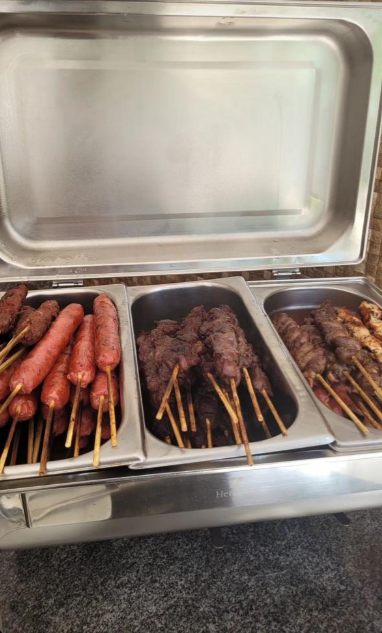
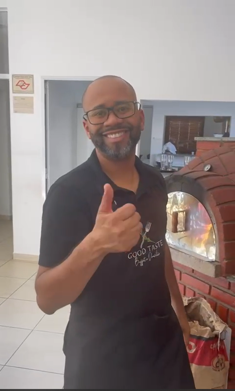
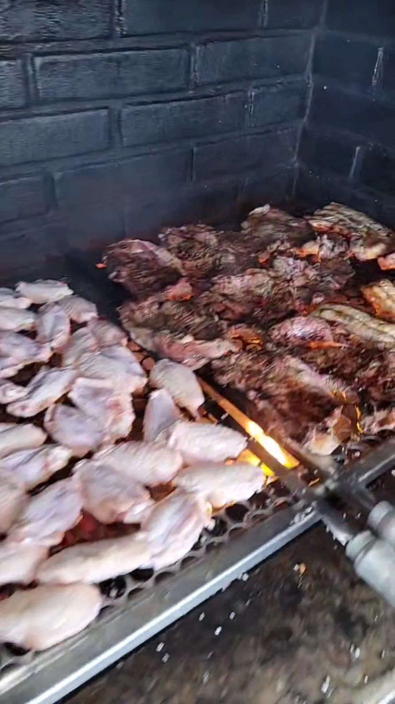

SOBRE MIM!!
Olá, sou Aquiles Junior, um mestre do churrasco com mais de uma década de experiência. Minha paixão é transformar cortes de carne em delícias defumadas e suculentas. Com habilidade e dedicação, crio experiências gastronômicas inesquecíveis, seja em pequenos encontros familiares ou grandes eventos corporativos. Estou comprometido em trazer o melhor do churrasco até você, com técnicas tradicionais e um toque de inovação em cada prato. Deixe-me cuidar dos detalhes e garantir que seu evento seja um sucesso culinário. Estou ansioso para criar momentos deliciosos ao seu lado.
Galeria de fotos






